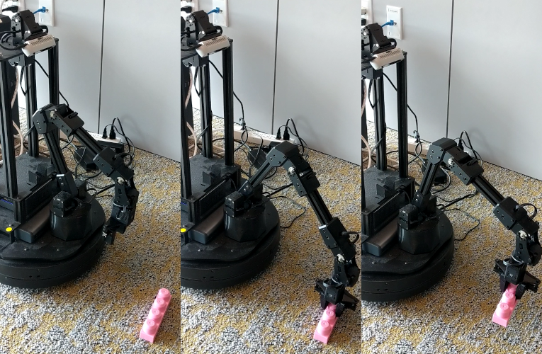

|
I am a third-year undergraduate at UC Berkeley. I work on deep reinforcement learning and robotics as part of the Robotic AI & Learning Lab with Professor Sergey Levine, Coline Devin, and Glen Berseth. |

|
|
I am broadly interested in reinforcement learning, robotics, game playing, deep learning, and artificial intelligence. In particular, I'm interested in sample-efficient learning in vision-based settings for simulated and real robotic systems. |
|  |
Current Work with Coline Devin, Glen Berseth, Ahbishek Gupta, and Sergey Levine We investigate how mobile manipulation platforms can use mobility as a tool to set up a variety of practice problems for manipulation, enabling robust learning. We propose a multi-objective learning strategy where the agent alternates between autonomously constructing increasingly challenging configurations to solve and maximizing rewards on the current configuration. |
|
As a Teaching Assistant, lead weekly discussion sections and hold office hours to help students. This semester, to better facilitate online learning, I also create video walkthroughs for class content. |

|
CS 170: Efficient Algorithms and Intractable Problems
CS 61A: Structure and Interpretation of Computer Programs |
|
Website template from Jon Barron
|